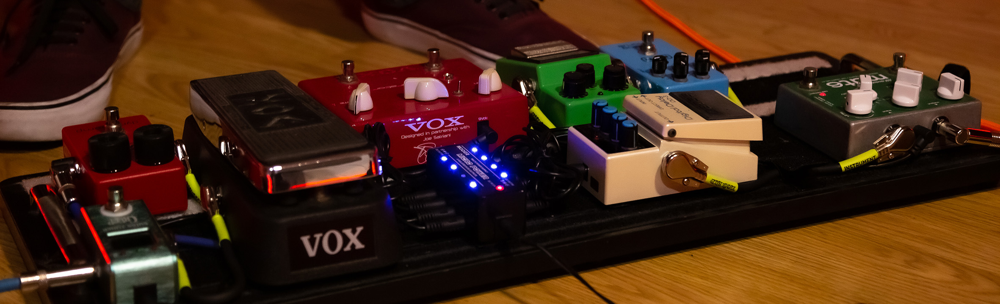

Música sin etiquetas ni ataduras
Naciendo de juntadas grupales para estudiar en la facu, Martin, Lucas y Gerard terminaban sapando en los ratos libres, que los terminó llevando a salas de ensayo a buscar al resto de la banda que hoy en día es Fuser.
Música
Cada uno tiene su estilo, cada uno tiene su década musical favorita, dentro de esa mezla buscamos congeniar una musica que nos lleve a una misma direccion, una fusión única que hace tan rico al rock sin etiquetas.
Estilo
Por ello mismo un estilo es difícil de encontrar, pero cuando se da la fórmula de la práctica incesante algo se desprende de una forma simbiotica para darle forma a lo que es la banda y su estilo propio musical.
Identidad
Identificarse en tiempos donde todo suena igual, donde pocos arriesgan a hacer algo diferente, puede resultar difícil para la música under, pero eso mismo es el reto que se carga en la espalda fuser sin miedo a nada ya que se trata de amor propio sin ataduras.
Distintivo
Con todo esto, solo nos queda seguir machacando en una fórmula que nos vive motivando e impidiendo sentarnos en esa zona de confort. Fuser experiementa abiertamente y vive a pleno la deconstruicción del pensamiento.
Trabajo
Creemos en que nada sucede de forma fortuita, nada ocurre solo, por eso siempre nos encontramos con una agenda anual cargada, preparada para la expeimentacion, la composicion, la practica, y la preparacion de shows y contenido constante.
